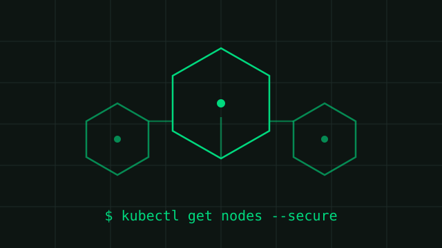

AWS + Terraform

Secure EKS Infrastructure & Access Control
IAM-based access control and resource allocation for containerized workloads on Amazon EKS, alongside firewall, VPN, and encryption management.
View Project